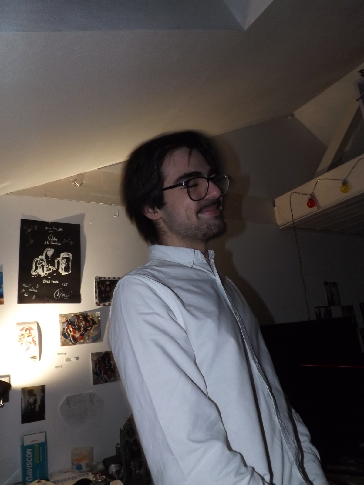

Adam BAJIC
Salut, moi c'est Adam. J'ai actuellement ans et je suis en plein dans mes études de BUT informatique.
J'aime la programmation, l'horreur et la culture d'internet.
Mon jeu préféré est ULTRAKILL et mon album préféré est
Lift Your Skinny Fists Like Antennas to Heaven
de Godspeed You! Black Emperor. (46:16 fait partie de la meilleure expérience auditive que je n'aie jamais vécue).
Vous aurez peut-être remarqué la notion de "VAL Incorporation" au sein du site. Il s'agit d'une
entreprise fictive dont je suis le co-fondateur avec deux camarades et que j'ai créée lors de ma première année de BUT pour un projet.
Certains jeux sont même liés à son histoire.
Bonne découverte !